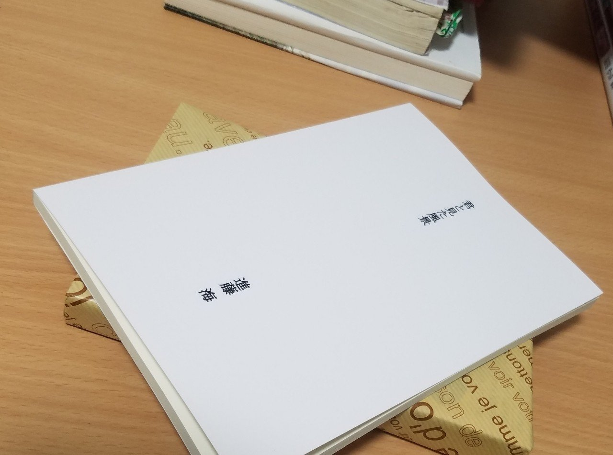
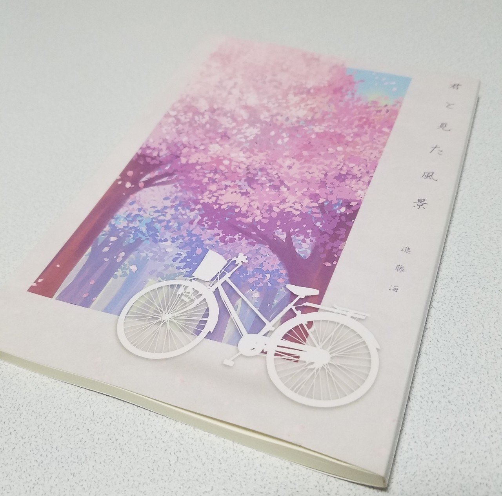

先月末に販売を開始した短編小説集「君と見た風景」。
Web経由でご購入いただいた方はもちろん、直接手渡しさせていただいた方も複数おり、こうして手に取ってくださった皆さんには感謝の気持ちでいっぱいだ。
そもそも、この本の制作を考えたのは昨年の夏。
2015年から始めたWebへの投稿活動を自分なりに形にしたいという想いが発端だった。
この本を最初に渡したのは、昨年秋に亡くなった祖母だ。
当時はまだ表紙がなくて、白地にタイトルだけという、とってもシンプルな作りだった。

10月14日。
その日、両親と一緒に祖母の見舞いに行った。小春日和の秋らしさが印象的な空だった。
急激に痩せてしまった祖母の目をまともに見ることができなかったけど、僕はなんとか本を渡すことができた。
「ばあちゃん、実は本を作ったんだ。手元に置いといてくれたら嬉しいな」
そう言うと、祖母は微笑みながら「ありがとね」と返してくれた。僕にはそれだけで十分だった。
思えば、この日が祖母と話をした最後の日になった。読んでもらえなくていい。ただ、僕はこうして何かを形にできたことを祖母に見てほしかった。
その10日後、祖母は静かに旅立った。
あまりにも突然のことで、涙もどこに向かえばいいのか考えているみたいに足踏みしていた。
祖母がいなくなった夜。母と叔父の三人で病室に残された遺品を整理していた時のこと。
ベッドの横に備え付けられた引き出しの中に小さなメモ帳を見つけた。母に聞くと、どうやら祖母は入院中の日々の出来事を毎日書き記していたらしい。
パラパラと中身を見る。毎日測る体温、お医者さんや看護師さんとの何気ない会話、食事をどれくらい食べられたかなどが祖母らしい几帳面な字で書かれていた。
10月14日。
そのメモ書きは他の日より少し大きな字で書かれていた。
「○○(僕の本名)が本を作ったみたい。大したものです」
それはただの字でしかないのに、いつしか病室の冷たい床に涙をこぼす僕を「泣くんじゃないよ」と励ましながら、優しく背中をさすってくれた。幼い頃の僕に微笑んでくれた祖母が、その字には確かに宿っていた。
今、美しい表紙で彩られた「君と見た風景」を見たら、祖母はなんて言ってくれるだろうか。笑顔で褒めてくれるかな。
そのページをめくるたび、きっとこれからも、祖母と見た風景は色鮮やかに蘇ってくる。
